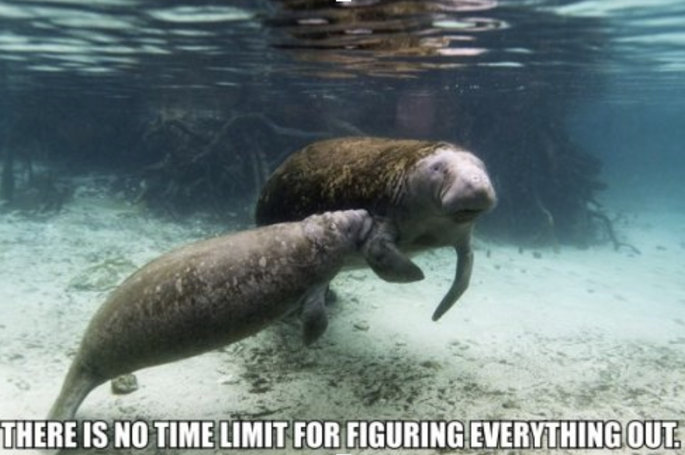
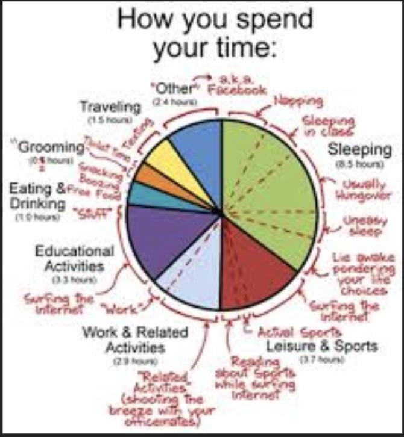
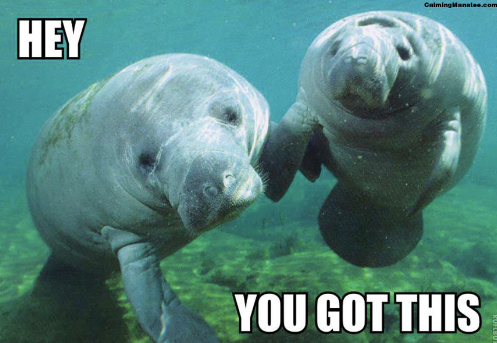
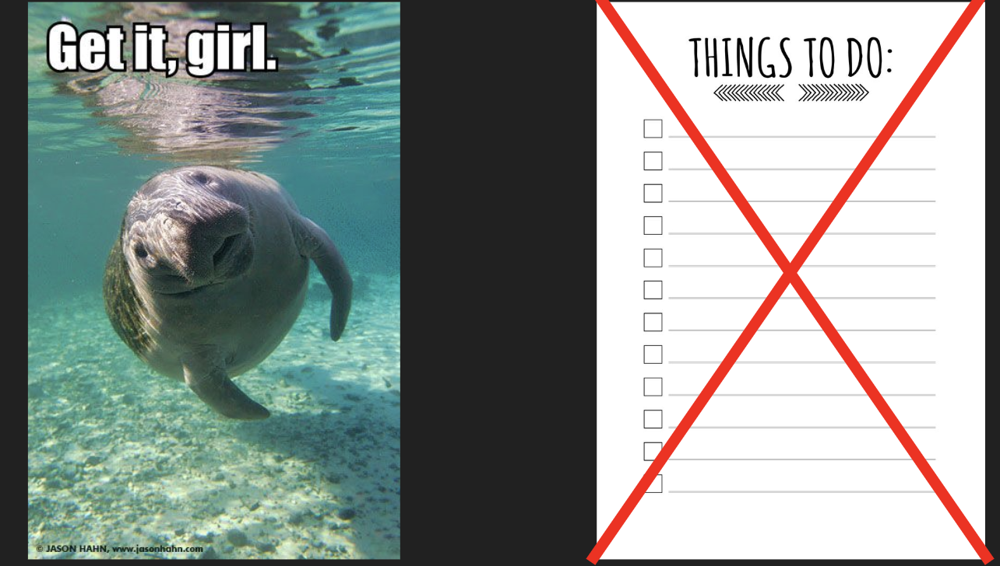
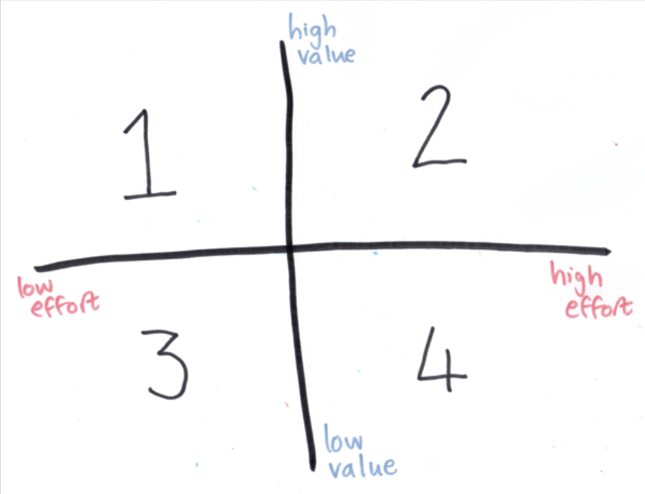
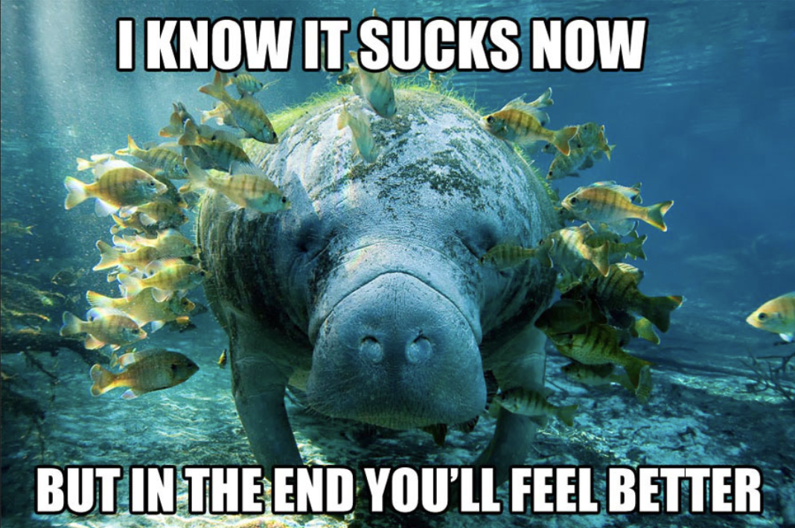
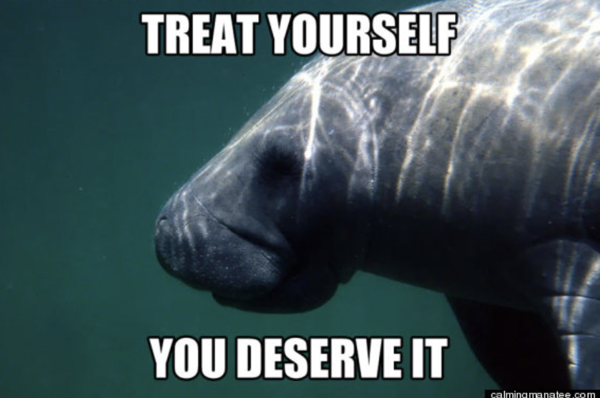
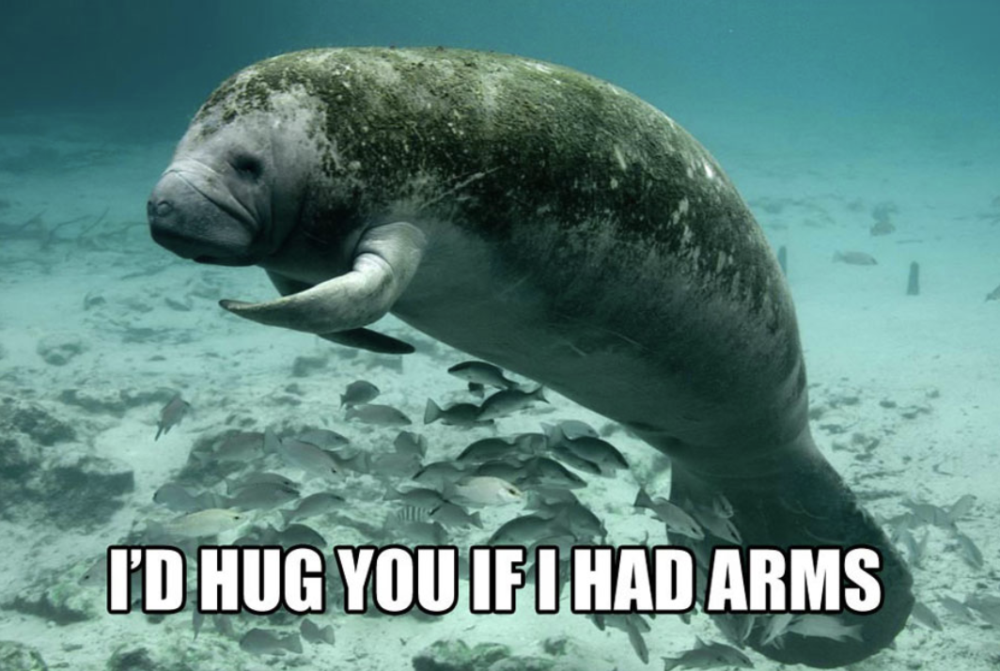
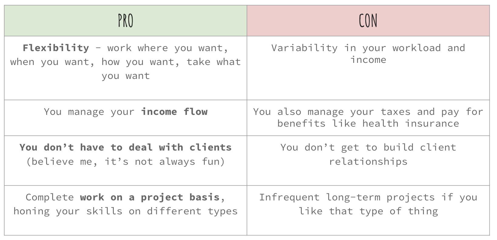
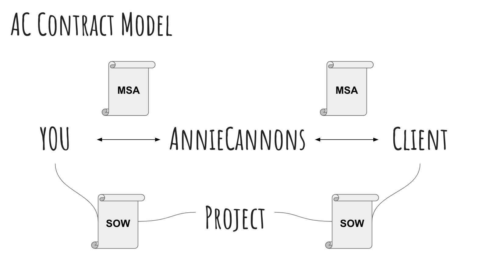

There is one magic secret to getting yourself organized and managing your time well…
...And that is that there is no magic secret.
It takes hard work
And a lot of practice.
What do we mean by time management?
“Time management” is the process of organizing and planning how to divide your time between specific activities. Failing to manage your time damages your effectiveness and causes stress.
We also call it “getting your shit organized”.
1. Your time is a precious and finite resource.

How do you spend your time?

2. Set Small Actionable Goals

3. Make the right kind of to-do list

Action Prioritization

Check out DLH Page 107
4.Todo List Tools
Click to see free apps
5. Calendar everything

6. Meditate. Or find something that feels mindful to you and do that.

Meditation Tools
Click to see free apps
7. Treat other people's time as precious too.

And remember when you get overwhelmed...
Independent Contractor
Pros and Cons

Refresher
What does it mean to be an independent contractor?
If I decide to take work from AnnieCannons, who am I employed by?
Personal Financial Management
Key Principles
Spend money mindfully. This means to think carefully about the ways that you are spending money and to stop, drop and think before you purchase something.
Save money. This means that each month, for your own financial safety and wellbeing, it is incredibly important that you are saving some money. It does not need to be a large amount of money; it could be a couple of dollars.
Use financial products safely. A financial product can be anything from a credit card to a checking account or a savings account. There are a ton of different products in the market, and you need to be able to make smart decisions so you are financially secure.
Important Rules
The Pillars of Successful Financial Planning
Pay yourself first. (Save 20% of your income.)
Spend less than you make.
Follow the 20/30/50 rule. Put 20% into savings, 30% toward your wants and desires, and 50% towards your needs.
If you receive tax form 1099-MISC for services you provide to a client as an independent contractor and the annual payments you receive total $600 or more, your tax filings are different than when you only earn income as an employee.
1099 Contractor
Taking Deductions
As an independent contractor, you can claim deductions for certain kinds of expenses from what counts as your "taxable income".
The deductions may be for business expenses or certain kinds of living expenses, like your health insurance or glasses.
For example, the cost of sophisticated computer software is an ordinary and necessary expense for a freelance graphic designer. (Hiring a limousine is not.)
What about your rent? Phone bill?
Keep track!
1099 Contractor
Reporting Net Income and an Independent Contractor
You will file a (1) FORM 1040 and (2) "schedules" that detail certain expenses.
For example, on "Schedule C or "C-EZ", you will calculate your net profit by taking your total self-employment income, including any earnings not included on a 1099-MISC, and subtracting the deductible business expenses you incur.
The final "net income" figure must be transferred to Form 1040 and combined with your other earnings to calculate your tax obligations.
1099 Contractor
Other things to keep in mind
You must pay Social Security and Medicare taxes ("Self-employment taxes").
You may have an obligation to make up to four estimated tax payments to the IRS during the year. The amount and frequency of your estimated payments depends on how much income you earn, the tax withheld from other employment income, and the method you choose to calculate your estimated taxes. Use Form 1040-ES to figure out your estimated tax obligations.
By the 15th of January, April, July, October, estimate based on 30% of your earnings
Pay via IRS.Gov
By January 31 of the following year, you will get a form “1099-MISC”. This lists your income for the year.
After you get your 1099-MISC, you can use Turbotax to file your taxes for free
Don't waste money
Track all of your miles to and from projects, you’ll use these at tax time
Keep all of your receipts for project-related expenses
Keep track of all of your rent, utility, and phone bills - you can deduct part of these
Health insurance premiums are deductable, if you have a non-government plan
You need a bank account with direct deposit
You need both a checking and savings account
We can only pay you via direct deposit - you need to provide the checking account and routing number to us through Gusto
We will NOT write checks or pay cash
Payments take a week, with an extra day delay for holidays
Estimate based on 30% of your earnings for taxes and put in a savings account
Pay via IRS.Gov out of your savings account
Working with AnnieCannons
Structure
Contracting
Fixed fee vs. hourly work
Tracking hours in Harvest
Efficiency on fixed fee projects
Project Cadence
Kickoff email and meeting
Check-ins/Standups [Internal]
Client Meetings/Presentations [External]
Feedback/Retrospectives
Expectations
If you sign a contract, you finish the project
Estimations on how long a task, feature or project will take
Meet your deadlines (with fixed fee projects, beat them!)
Give realistic estimates of how much time you can commit to working. It’s okay if this changes!
Be communicative, responsive, and accountable
Ask questions early and often
Respect your AC team’s time by scheduling meetings, showing up on time, and consolidating questions
Expectations
If we agree to a fixed fee project and offer it to you, we will be responsible for telling the client if they are asking for something outside the scope of their contract
If we share an item on your action items list/project checklist, that’s because we believe it is in scope.
When making assignments, we will tell you what to bill hourly and what to count as part of the fixed fee if there is a difference.
Expectations
You will be paid according to your SOW, usually 50% up front and 50% when complete. “Complete” means the site is live on the client’s domain, has been tested and is free of material bugs, and has been approved by the client. Expect to make at least a few additional changes after the client’s review.
We let the client change their mind a reasonable number of times, but not forever. If we ask you to make a change, it’s because we priced that change within the scope of the contract.
Model

Your Subcontractor Agreement
You will sign one master agreement and an exhibit or “SOW” for each project.
The master agreement obligates you to keep all client information confidential, and gives the client ownership of everything you build.
You must sign the SOW within 24 hours of receiving it via email to be on a project
The SOW has the timeline and rate for the project - you must get it. If you do not - even for emergencies - you will be disqualified from future projects. Don’t procrastinate!